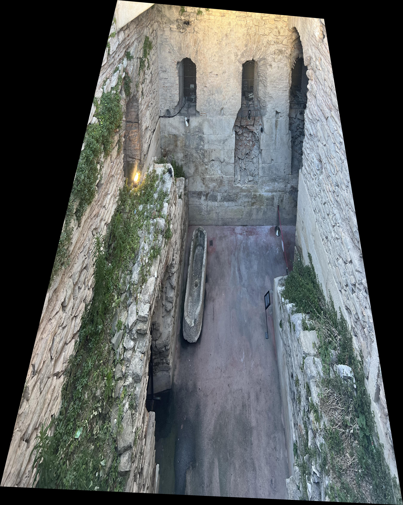
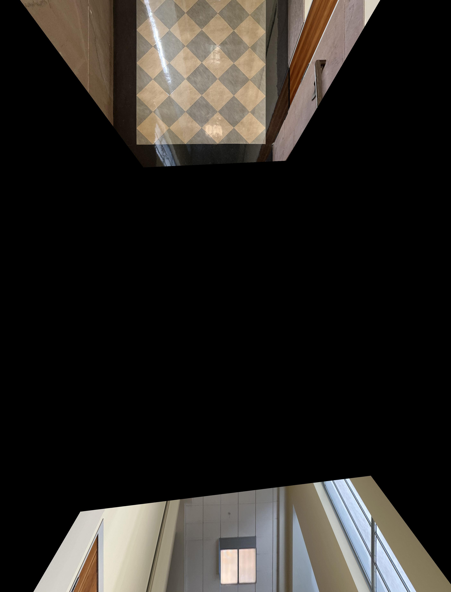
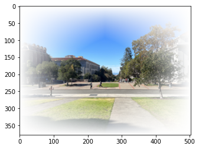
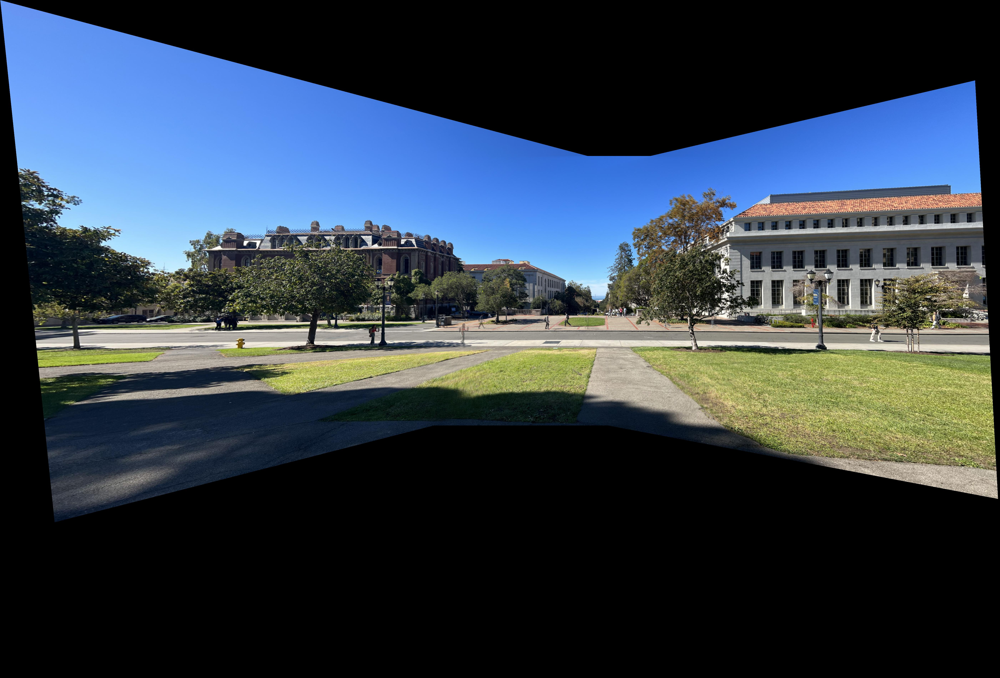
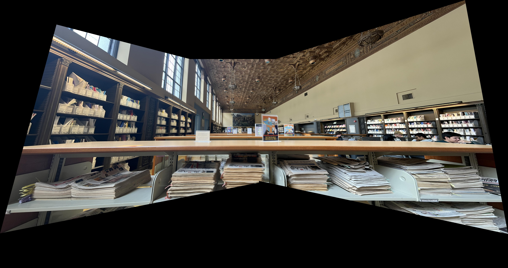
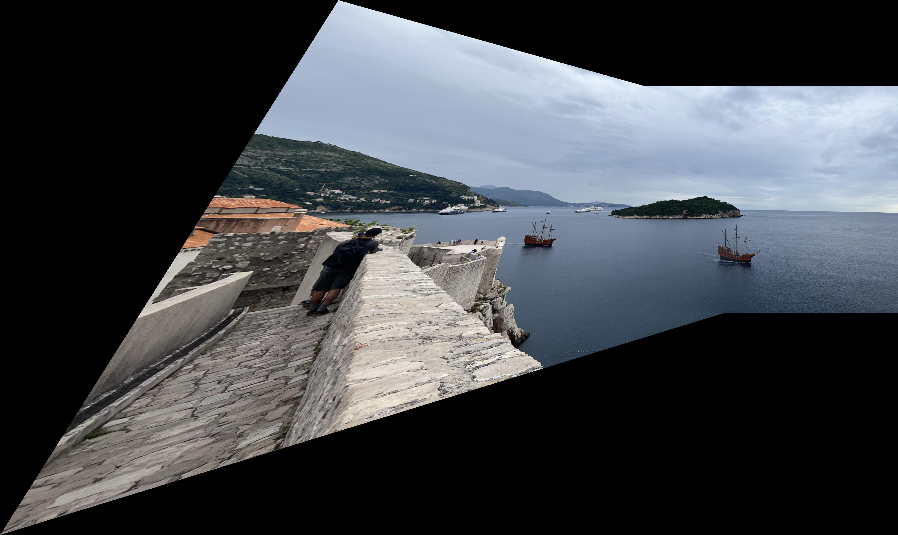
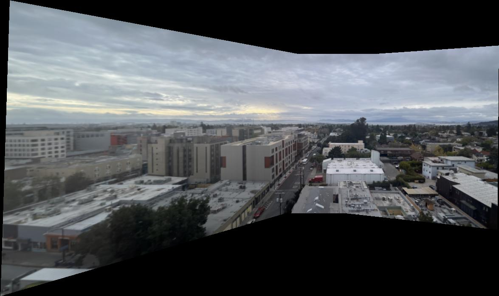

I recovered the homographies with np.lstsq. The x vector we are solving for is [a, b, c, d, e, f, g, h], because there are 8 unknowns in a homography. The first row of the A matrix is [x1 y1 1 0 0 0 -x*x' -y*x']. The second row is [0 0 0 x1 y1 1 -x*y' -y*y']. (x', y') are the coordinates of the destination point, while (x, y) are the coordinates of the source point.
I used backward warping with a regular grid interpolator. For the pictures within Berkeley, I am warping them to the "center" image. When I warp, I first calculate where the corners of the image will go, which I then use to calculate the size that is needed to store the entire warped image.
I rectified the image from Split, Croatia, so that the back wall is flat:
I retified the image of the hallway to bring the tile pattern into view. Notably, the ceiling warps into the bottom part of the image, which I am ok with because I only want to see the pattern on the tile. I believe the ceiling warp issue could be fixed with a different choice of points.
To blend the warped images together into a mosaic, I add an opacity channel to the original images, with lower opacity at the corners and edges. Then, I warp the full image including opacity, and multiply the rgb values of each warped image by their corresponding opacity. I then sum up these modified warped images. Finally, I divide this image by the sum of the opacities, to create the final, blended image. Here is an example of what the opacity mask looks like on the center Berkeley image:
Here is a mosaic of the Berkeley campus. Several people appear twice in the image, because they were walking while I took them.
Here is a mosaic of Doe library. Aligning all of the text on the pages remains a challenge, but the rest of the library is in focus
Here is a mosaic of the view from the walls of Dubrovnik, Croatia. I loved watching the pirate ship sail past, so I picked two shots that each had it in, so it creates the effect of a few ships sailing off. This photo is from two different locations on the wall, but they are close enough and the subjects are far enough away that it doesn't matter. The pointwise correspondences are between the island in the horizon, because the water is impossible to align to.
I used the Harris detector sample code to detect points in each image. Because detecting corners requires a significant amount of memory, I had to downsize the images for this part. Here are the detected Harris corners for each center image:
I use adaptive Non-Maximal Suppression to reduce the number of Harris corners to 500, while keeping a good spread of potential points accross each image. My implementation first finds, for each Harris corner (x, y), the distance from the corner to the closest corner (x', y') where h(x', y') > .9*h(x, y). Then, I take the top 500 corners for whom this value is the largest. This finds points that are both prominently corners and well spaced out.
Here are the ANMS corners overlaid each center image:
To extract feature descriptors, I took a 40x40 grayscale patch around each Harris corner, and then downsampled it to an 8x8 patch. Then, I bias/gain normalized each patch. Here is an example of this process for a patch from the center Berkeley image:
To match feature descriptors between images, I first compute the pairwise distances between every patch. Then, I pair the points i and j if and only if distance(i, j) < .4*distance(i, any other point). This only creates matches where it is very clear that these two points are more similar than any other possible pairing.
Here are the matched points for the Left + Center and Center + Right combinations for the Berkeley images.
To compute the homography, I implemented the RANSAC algorithm. My algorithm has an error threshold of 5, and samples 4 inlier points at each iteration. I run the algorithm for 1000 iterations, and take the homography with the largest number of inliers.
Here are the images from BAIR warped to the center image:
Finally, I combine these into a mosaic. I do this using the same opacity blending as I did previously.
Hand Labeled (Part A)
Automatically Labeled (Part B)
Finally, the BAIR panorama, which was new in this section:
The most interesting thing I learned in this project was how to use the RANSAC algorithm to exclude outliers. Without RANSAC, my image warpings were unpredictable, but RANSAC successfully filtered through the noise. Automatic correspondences are fascinating!